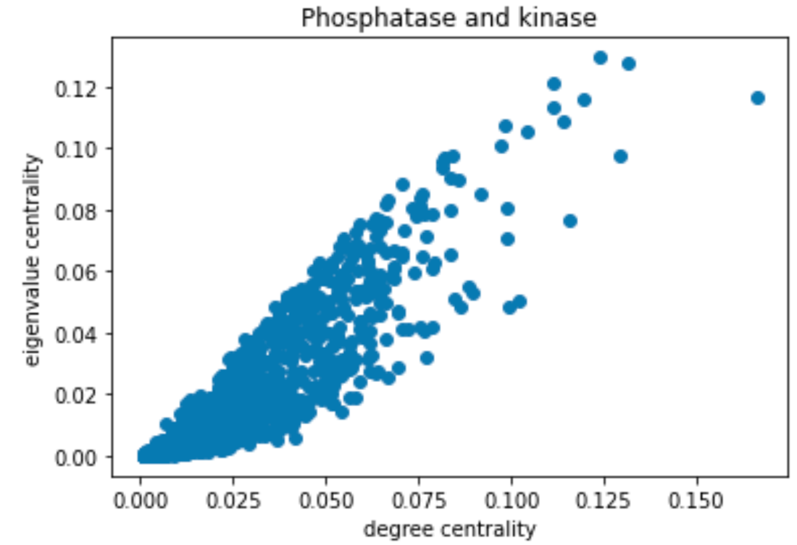

The dataset was obtained from the STRING database and consisted of a weighted simple network with yeast proteins. After importing the dataset as a graph G, we only kept edges with a weight above 500. In order to focus our research on PDH deficiency, essential proteins that play a central role in all biological pathways were also removed from G. The first challenge we faced was due to the name of the proteins in the dataset. First, all proteins started with the prefix “4932” that we had to remove. Lastly, the network dataset was built using the Systematic Name for proteins whereas the biology students were communicating using the Standard Name. Thus, we quickly encountered situations where the mathematics students discussed proteins that the biology students could not identify. To overcome this challenge, we obtained a new file that allowed us to rename all proteins in G.
Phase 2: Focusing on PDH Complex interaction between Phosphatase and Kinase
Louvain Algorithm Visualised
Once, PDH deficiency was chosen as our final theme, the biology students shared seven proteins of interest with the mathematics students. Four of the proteins corresponded to the PDH complex while the last three were the Phosphatase and Kinase. We first verified that none of those seven proteins was one of the essential proteins that were removed earlier on. We decided to use some community-finding algorithms to understand how the 7 proteins behave within graph G. The Louvain algorithm was selected as it has been shown to be simple and efficient on a large network (Source). The Louvain algorithm is also easy to implement with Python and produces clear and interpretable results. The output of the algorithm is different lists of nodes where each list corresponds to a community. Interestingly, the 7 proteins were found to be part of two distinct communities - the 4 proteins 'PDA1', 'PDB1', 'LAT1', 'LPD1' corresponding to the PDH complex in one, and the 3 proteins 'PKP1', 'PKP2', 'PTC5' corresponding to phosphatase and kinase in another.
Due to the inherent randomness of the Louvain algorithm, we investigated the robustness of the algorithm. In particular, we ran Louvain 100 times and observed that in all 100 runs, the four PDH complex proteins ['PDA1', 'PDB1', 'LAT1', 'LPD1'] were in the same community; moreover, when we looked at the particular community that the four proteins were a part of, there were consistently 58 other nodes that were in the same community as the four PDH proteins.
We isolated this group of 62 proteins and plotted them below:
Out of these 62 nodes, the maths students identified the nodes with the highest degrees in the original graph. The top 10 were:
('ACO1', 179)
('PDB1', 171)
('MDH1', 168)
('FUM1', 163))
('LSC1', 144)
('KGD1', 141)
('MDH3', 139)
('GUT2', 139)
('LSC2', 137)
('PDA1', 136)
We also identified nodes with the highest degree within the 62 node subgraph. This produced a different ordered list, and the top 10 of these were:
('CIT2', 43)
('CIT3', 42)
('ACO1', 41)
('PCK1', 40)
('FUM1', 40)
('MDH1', 39)
('ACS1', 39)
('PYC2', 38)
('IDP2', 38)
('CIT1', 38)
Within the brackets, the numbers indicated the degree centrality of the respective nodes. These results were provided to the biologists in order to undergo further analysis.
We performed the same analysis on the group of 3 proteins involved in PDH regulation ['PKP1', 'PKP2', 'PTC5']. Here we found that in all but one of the 100 runs, all three proteins belonged to the same community. However, unlike the 4 proteins in the PDH complex, there were no other common proteins in the same community across all the 99 runs. In addition, we applied Leiden on the community of the group of proteins in the PDH regulation ['PKP1', 'PKP2', 'PTC5'] 100 times. In all of the runs, the 3 proteins were in the same community 71 times, and similarly to the Louvain runs, there were no common proteins in those 71 runs.
Phase 3: Further analysis using Louvain's Algorithm
Community finding algorithm within subgraph provided by Louvain’s Algorithm: We are now working with two separate graphs G_PDH and G_enz corresponding to the community of PDH Complex and Phosphatase/Kinase respectively provided by the first run of Louvain’s Algorithm. The Louvain algorithm on G_PDH yielded 12 communities of size varying from 34 to 281. The four proteins "PDA1", "PDB1", "LAT1" and "LPD1" were found to be in the same community of size 201. Similarly on G_enz, 12 communities were obtained with sizes varying from 31 to 301. The proteins “PKP1", "PKP2" and "PTC5" corresponding to Phosphatase/Kinase were all in the biggest of the 12 communities.
Degree and Centrality analysis using subgraph provided by Louvain’s algorithm: Two subgraphs were obtained from the Louvain algorithm. The first one corresponded to the community containing the PDH Complex proteins and the second one contained the Phosphatase and Kinases. We used the degree_centrality() and eigenvector_centrality() functions to study the importance of PDH complexes and enzymes within their respective community. The output of degree_centrality for a given node is the fraction of nodes it is connected to. The enzymes had a fraction between 0.01 and 0.02. The PDH complex had values between 0.05 and 0.07. Looking at the histogram below, we can see that the PDH complex proteins have a high centrality within their community (red). The proteins corresponding to Phosphatase and Kinase are not “special” for their community (blue).
Histogram of Centrality Distributing Distribution comparing that of the PDH Complex with the Enzymes.
Using eigenvalue centrality led to the same results. In comparing various forms of centrality measures, they found that there was little to no difference between the information found with different methods and therefore were able to confirm with a certain degree of certainty their results.

Phase 4: Other analysis
Leiden: Louvain has an issue with creating badly connected communities. Therefore, in taking that possibility into account, we implemented Leiden, an improved Louvain algorithm that is faster and focuses on moving nodes locally. However, using Leiden did not generate any new information than what was already known from using the Louvain algorithm.
Greedy modularity maximization: Beyond the Louvain algorithm, we also looked at other community detection algorithms to verify the communities that were generated by Louvain. One algorithm we analyzed was the Clauset-Neuman-Moore greedy modularity maximization algorithm. This algorithm begins with each node in its own community and iteratively joins pairs of communities that result in the largest modularity increase until no further increase in modularity is possible.
Running this algorithm lead to the same results as the Louvain algorithm i.e. that the four PDH proteins 'PDA1', 'PDB1', 'LAT1', 'LPD1' belonged to one community, and the three 3 proteins involved in PDH regulation 'PKP1', 'PKP2', 'PTC5' belonged to another. This provides further evidence for the communities generated by Louvain.
Analysis of shortest paths and common neighbours: With the separation of the 7 proteins into two communities now being clear, we now turned to how the proteins and their respective communities interact with each other. For example, whether or not the two communities were tightly knit or not may correspond with biological implications.
We first analyzed the shortest paths between all 21 pairs of proteins. We found that within each of their respective communities, all proteins were directly connected with each other. In terms of connections between proteins of different communities, all protein pairs except for (LPD1, PKP1) and (LPD1, PKP2) were again directly connected with each other. The two protein pairs that were not directly connected were connected indirectly through LAT1 i.e. the shortest paths for these two protein pairs were (LPD1, LAT1, PKP1) and (LPD1, LAT1, PKP2) respectively. This analysis shows that the two communities are quite closely knit.
Next we analyzed the common neighbours among the group of 4 proteins 'PDA1', 'PDB1', 'LAT1', 'LPD1' and the group of 3 'PKP1', 'PKP2', 'PTC5'. Among the group of 4, the common neighbours were:
Among the group of 3, the common neighbours were {'LAT1', 'PDA1', 'PDB1', 'PDX1', 'PTC3', 'PTC6', 'PTC7'}.
It is interesting to note that the common neighbours of the group of 3 included LAT1, PDA1, PDB1 which are part of the group of 4 proteins involved in the PDH complex. Additionally, the proteins PTC3, PTC6, PTC7 may be related biologically to PTC5. These results were given to the biologists for further analysis.
Spectral clustering: We also investigated spectral clustering as an alternative way to perform community detection. To do this, we constructed the graph laplacian corresponding to G. We then computed the eigenvalues and eigenvectors associated with the graph laplacian, sorted in increasing order.
Spectral Clustering
Unfortunately, there was no easily identifiable spectral gap so we did not proceed further with this.
Phase 5: Analysis of lipoic acid proteins
We now turn our attention to the analysis of a different group of 4 proteins ['LIP5', 'LIP1', 'NFU1', 'LAT1'] that are associated with lipolic acid. We decided with the biochemistry students that the best way to understand the importance of the proteins was through knockout procedures.
In our first attempt we looked at each combination of pairs, triplets, and all four of the proteins and computed the common neighbours. The results are presented below:
These results were given to the biologists for further analysis.
Next, we wanted to see whether removing the four proteins would have any effect on the community structure. Our initial plan was to knockout each protein individually, then in pairs, in triads, then all four through using the Louvain algorithm. However, following the removal of the each of the four proteins individually, we recognised that this process was not going to be efficient enough. Due to the nature of the Louvain algorithm, by running Louvain only once for each knockout, we were unable to see any recognisable changes as a result of the size of the PPI network and the randomness of the community detection process. Thus, we decided that a more nuanced approach was required.
Our approach is as follows. From the original PPI network G, we ran the Louvain community finding algorithm to partition the nodes into clusters. We then formed a reduced graph H where each node in H corresponds to a community in G, and edges between nodes in H have weights equal to the cut size of the two communities in G i.e. the number of edges such that one endpoint is in one community and the other endpoint in the other community. If the cut size is zero, then the two nodes in H are not connected. Finally, as the Louvain algorithm often produces many singleton communities, any isolated nodes in H are removed.
As a proxy to finding the knockout effect of the proteins, we investigate whether particular communities are "bottlenecks", with the intuition being that if a community is a bottleneck, then removing that community would significantly alter the resulting structure of the network. In particular, we would like to know whether any of the communities that the four proteins of interest are part of are such bottlenecks.
In order to quantitatively capture the notion of a bottleneck, we plotted the (weighted) degree centrality of nodes in H against their (weighted) betweenness centrality. The weighted degree centrality of a node v is simply the sum of the edge weights of the node; we normalise this value to lie in the range [0,1] by dividing this quantity by twice the sum of all edge weights.
The weighted betweenness centrality (Clauset, et al. 2004) of a node V is the sum of the fraction of all-pairs shortest paths that pass through V:
Note that the weight parameter for betweenness centrality is interpreted as distances. However, in our case, the weight of an edge is the cut size between communities and a larger weight would indicate two communities being more closely knit and so they should be interpreted as being "closer", hence we use 1/weight for the parameter.
To identify a bottleneck, we would want a node with low degree centrality but a high betweenness centrality, as demonstrated in the example below:
Bottleneck in a graph.
Below is a scatter plot of the two centrality measures corresponding to the same community partition; again the communities that the proteins belong to are coloured red.
Unfortunately, we observe that the nodes with high betweenness also have high degree centrality.
We also varied the resolution parameter in the Louvain algorithm to generate different sized communities to investigate whether this would have any effect on bottlenecks. A resolution parameter less than 1 favours larger communities, and the resolution parameter greater than 1 favours smaller communities.
We tried varying the resolution parameter from 0.5 to 2 in 0.1 increments and ran 3 independent runs of Louvain. Ultimately, there are no bottleneck communities regardless of the resolution parameter, when measuring bottlenecks in this way.